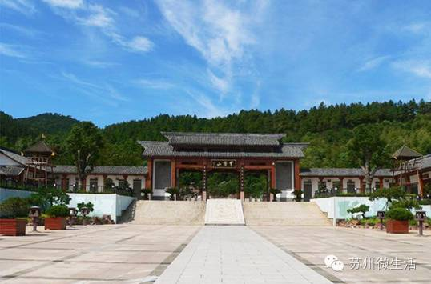
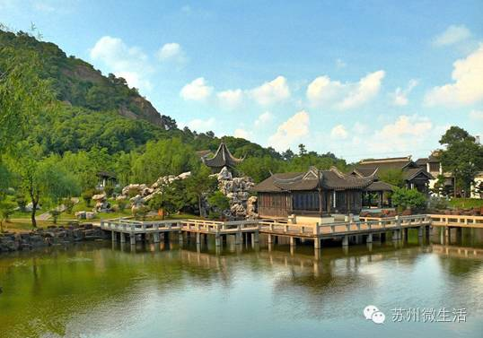
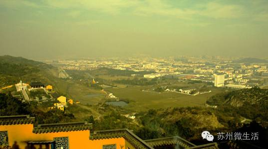
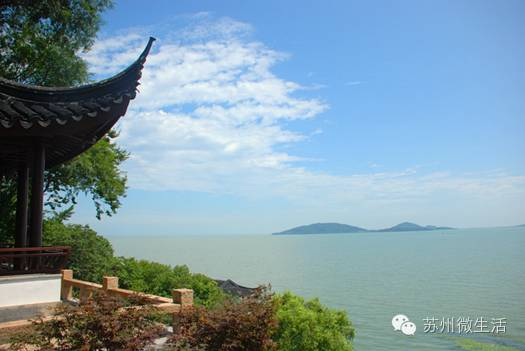
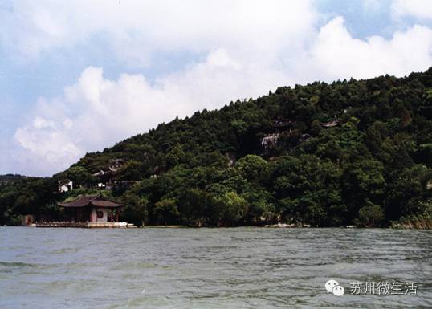
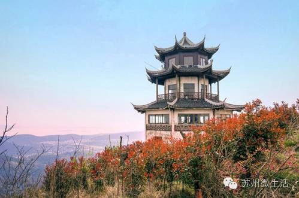
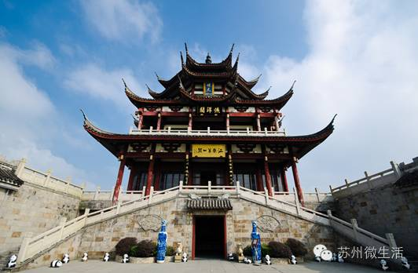
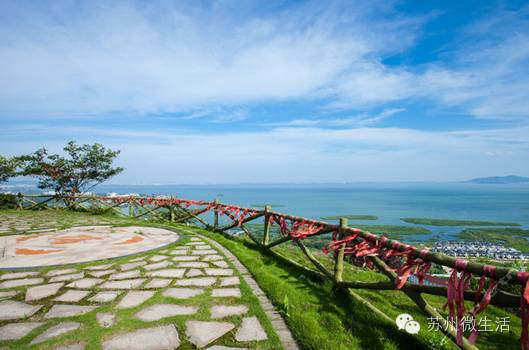
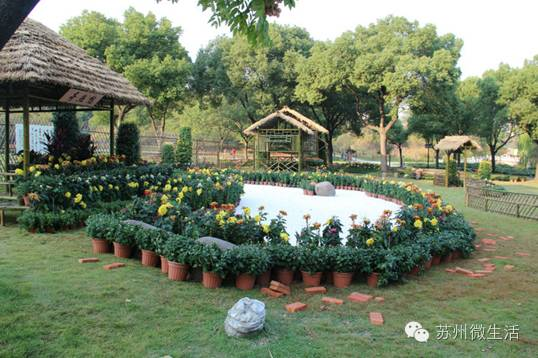
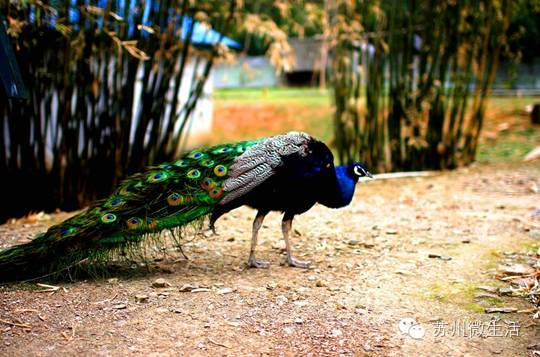

苏州人都爱去的8座山，秋游登高现在就走起！
苏州的山虽然不高，却也有着不输园林的历史和特质。正如一位文人所言：山虽无言，然非无声。这个秋天，一起来爬爬苏州的山，倾听苏州的如歌岁月吧！
穹窿山/太湖东岸群山之冠
穹窿山海拔341.7米，是苏州最高、最大的山，盘山公路直达山上，山上森林成片，苏州当地人把它当成天然大氧吧。
苏州最高峰、最大山、最长盘山公路都在穹窿山了，在苏州众多山中气势更雄伟，苍松翠竹、风景秀美，爬山过程中会有身临仙境的感觉。

【攻略】 开放时间：8:00-16:00 票价：①成人票80元（网上订票会便宜很多） ②6周岁（含6周岁）以下或身高1.4米（含1.4米）以下的儿童免票入园；残疾人、70周岁以上老人凭有效身份证免票入园 地址：苏州市吴中区藏书镇中心西南一公里
灵岩山/灵岩秀绝冠江南
灵岩山海拔182米，山上有好多奇形怪状的石头，山上的灵岩寺相传坐落于夫差为西施建造的馆娃宫旧址上，灵岩塔前的灵芝石是山名的由来。
每逢周末，苏州当地人都喜欢来此爬山，到灵岩山寺烧香祈福，返程途中可以在落红亭观赏日落，这里可是最佳观赏地。
【攻略】 开放时间：08:30-17:30 票价：①成人票20元 ②儿童身高1.2米以下免票；老人70岁以上，军人凭相关证件免票 地址：江苏省苏州市吴中区木渎灵岩山
天平山/吴中第一山
天平山海拔201米，以怪石、清泉、红枫“三绝”著称，山上奇石嶙峋，危耸峭峻，山虽不高，但有点险峻，爬起来很带劲。
每年的红枫节前后，还能看到闻名天下的五彩枫景，枫叶由青变黄，再变橙，变红，最后变紫，往往在一棵树上就能看见五色并存的美丽景象。
【攻略】 开放时间：7:30-17:00 票价：①成人票30元 ②70岁以上老人凭证免票；60岁以上老人5折优惠；1.2以下儿童免费 地址：苏州市吴中区木渎镇灵天路
天池山/江南小黄山
天池山山清水秀，环境清幽，深厚的文化底蕴一直是秋天登高的好去处，环境清幽至极，宛如桃源仙境。

山顶风很大，正好是观景凉快的好地方，坐在山顶莲花峰上静观落日，红霞满天，余辉缠绵，红叶满坡，美哉、美哉。
【攻略】 开放时间：8:00-16:30 票价：①成人票60元（网上订票会便宜很多） ②儿童身高1.2米以下（含1.2米）免票；1.2—1.4米（含1.4米）的儿童半价；60—69周岁的老人凭有效证件半票；70岁以上老人、军人、残疾人凭相关有效证件免票 地址：苏州市吴中区木渎镇藏书镇（412乡道旁）
石公山/湖光山色举目入画
石公山论山高，石公山微不足道，只有49．8米，论山势，石公山也不足挂齿，谈不上险峻雄伟，然而它却以其特定的地理位置和独特的景致，吸引许多苏州人登高放松。
满山翠柏浓郁，如青螺伏水，似碧玉浮湖，风光无限好，堪称人间仙境，每年的农历九月十三傍晚，可观“日月双照”奇观。
【攻略】 开放时间：8:00-17:00 票价：①成人票50元（网上订票会便宜很多） ②身高1.2米—1.5米半票，1.2米以下免票；60-70岁之间凭相关证件购半票，70岁以上以及现役军官凭相关证件免票，残疾人凭残疾证免票。 地址：苏州市吴中区金庭镇西山岛的东南端
缥缈峰/太湖七十二峰之首
缥缈峰海拔336米，因经常被云雾笼罩，犹如传说中的缥缈仙境，是太湖西山国家森林公园的中心地带，山高林密，植被茂盛，山溪蜿蜒贯穿整个景区，常年山泉流淌不绝。
缥缈峰有10公里的环山旅游公路和5公里的登山步道，是健身锻炼和观光游览的绝佳线路。登上缥缈峰顶的瞭望塔，可将三万六千顷湖光山色尽收眼底。
【攻略】 开放时间：周一至周五8:30-16:30 票价：①成人票80元（网上订票会便宜很多） ②儿童身高1.4米以下免票；老年70岁以上免票；学生凭证半价 地址：苏州市吴中区金庭镇（太湖西山）涵村坞
渔洋山/一泓天水生渔洋
渔洋山主峰171米，山势绵延，形如鳌首，景观丰富，拥有湖荡、山坞、岛屿、溪水、森林、古井、清泉、奇石、珍稀动物等多种生态资源。
渔洋山一直是观赏太湖美景的最佳去处，这还有1280米的滑道，山上风很大，空气很新鲜，可以一眼看到山下所有的风景，绝对是秋天登高的好去处。
【攻略】 开放时间：8:30-16:30 票价：①成人票80元（网上订票会便宜很多） ②儿童身高1.2米以下、70岁以上老人持本人有效证件免景区大门票 地址：江苏省苏州市太湖渔洋山风景区（太湖大桥桥东300米处）
上方山/都是森林中的诗意
上方山海拔92.6米，虽也不高，但胜在山下山上风景都好，特别是春秋二季，一直吸引着许多苏州人前来赏花爬山野炊。
上方山秋天有菊花展，还紧邻着石湖景区，这里有山有水，景区里还有孔雀猴子等小动物，特别适合带着父母和小朋友来玩。
【攻略】 开放时间：7:00-16:30 票价：①淡季40元，旺季45元（11月1日-次年7月31日，8月1日-10月31日） ②儿童身高1.2米以下免票；70周岁以上老年人、军人、残疾人凭有效证件免票 地址：苏州市虎丘区吴越路
经历了一轮又一轮的高温，苏州终于迎来了秋风习习，不冷不热刚刚好，不来一趟秋游怎么行？走走走，一起去苏州爬个山，感受下满城渐浓的秋色吧！